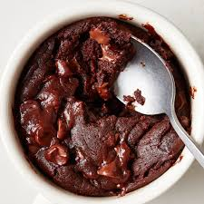

Mug Brownie

Description
A mug brownie is a chocolate baked confection that is baked in a coffee mug.
Ingredients
- three tbsp granulated sugar
- three tbsp all purpose flour
- one and a half tbsp unsweetened cocoa powder
- pinch of salt
- two tbsp chocolate chips
- one and a half tbsp vegetable oil
- three tbsp milk
- quarter tsp vanilla extract
Steps
- Place sugar, flour, cocoa powder and salt in a mug. Use a small whisk or fork, and stir until combined, and free of lumps. Stir in chocolate chips. Add oil, milk and vanilla, stir with a spoon or small rubber spatula until just combined.
- Sprinkle a few additional chocolate chips over the top and cook in the microwave for 60 seconds.